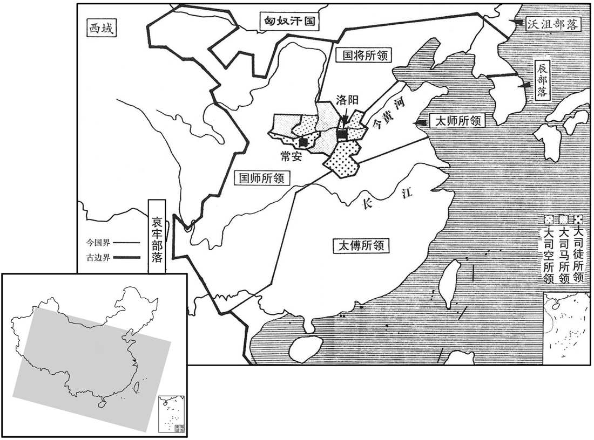
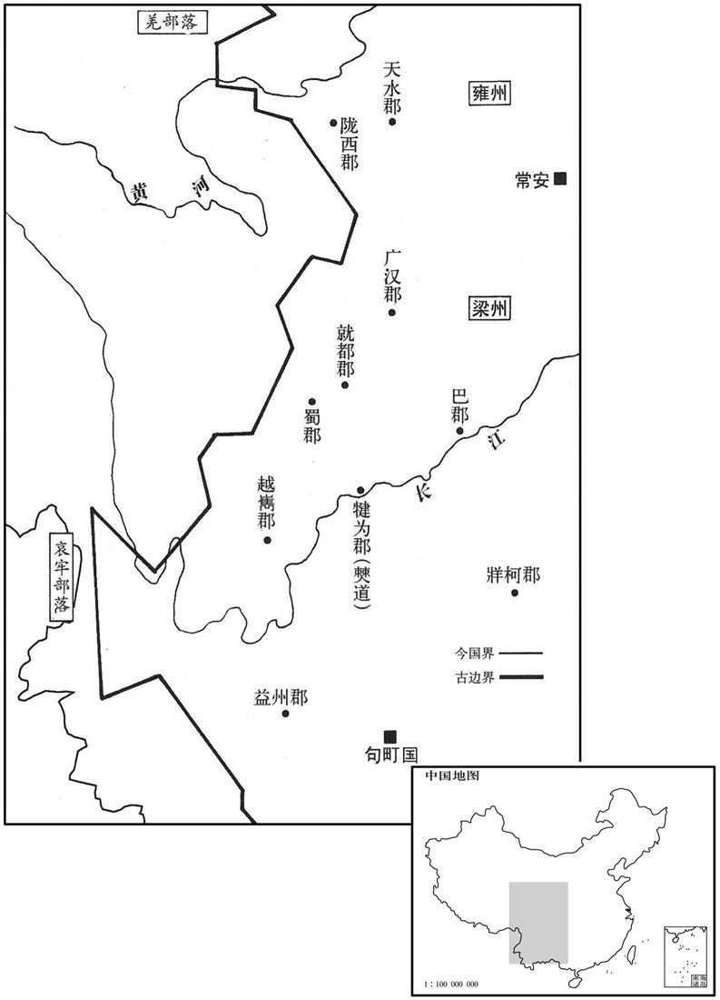
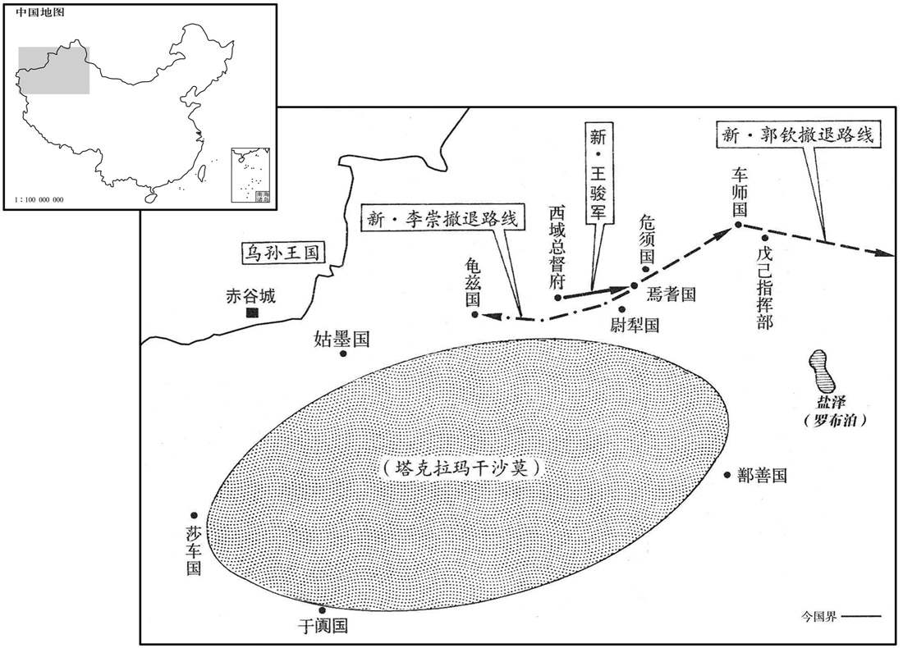

公元16年资治通鉴：本年记事、原文与白话对照
按原书编年位置阅读；追叙和史论不等于本年发生的事件。白话采用所据译本，缺译不以生成译文补齐。
卷38 · 本年记事
公元16年 · 汉孝平皇帝天凤三年
三年〔（丙子、一六）〕
上传原文的注释括号有异常，字符原样保留；无法可靠划分的段落默认全文显示。
本年事件索引（现代整理）

本年形势与背景参考图

本年形势与背景参考图

本年形势与背景参考图
春，二月，乙酉，地震，大雨雪；〔雨，于具翻。〕关东尤甚，深者一丈，竹柏或枯。〔竹柏冬青，或至于枯。言常寒之咎。〕大司空王邑上书，以地震乞骸骨。莽不许，曰：「夫地有动有震，震者有害，动者不害。春秋记地震，易系坤动；动静辟翕，万物生焉。」〔师古曰：辟，音辟。辟，开也。易上系之辞曰：夫坤，其动也辟，其静也翕，是以广生焉。故莽引之也。〕其好自诬饰，〔好，呼到翻。〕皆此类也。
春季，二月乙酉（疑误），发生地震，天降大雪，关东地区尤其厉害，雪深的地方有丈把深，竹子、柏树有的枯死了。大司空王邑上书，以地震为由，请求退休。王莽不准，说：“大地有震有动，震有害而动无害。《春秋》记载地震，《易经·系辞上传》只说地动，动的时候就张开，静的时候就合拢，万物由此发生。”王莽喜爱自我欺骗掩饰，都是此类。
先是，莽以制作未定，〔先，悉荐翻。〕上自公侯，下至小吏，皆不得俸禄。〔俸，扶用翻。〕夏，五月，莽下书曰：「予遭阳九之総，〔传曰：三统之元，有阴阳之九焉，天地之常数也。〕百六之会，国用不足，民人骚动，自公卿以下，一月之禄十繌布二匹，〔孟康曰：繌，八十缕也。师古曰：繌，音子公翻。〕或帛一匹。〔帛，缯也。〕予每念之，未尝不戚焉。今総会已度，府帑虽未能充，〔帑，他朗翻。〕略颇稍给。其以六月朔庚寅始，赋吏禄皆如制度。」〔赋，布也，与也。〕四辅、公卿、大夫、士下至舆、僚，凡十五等。〔左传曰：人有十等：王臣公，公臣大夫，大夫臣士，士臣皁，皁臣舆，舆臣隶，隶臣僚，僚臣仆，仆臣台。今莽自四辅以下分为十五等。〕僚禄一岁六十六斛，稍以差称。〔【章：十二行本「称」作「增」；乙十一行本同；孔本同。】〕称，尺证翻。〕上至四辅而为万斛云。莽又曰：「古者岁丰穰则充其礼，〔师古曰：穰，音人掌翻，又音如羊翻。〕有灾害则有所损，与百姓同忧喜也。其用上计时通计，〔上，时掌翻。〕天下幸无灾害者，太官膳羞备其品矣；即有灾害，以什率多少而损膳焉。〔以十为率，视灾害所减多少而制分数。〕自十一公、六司、六卿以下，〔六司，即前所置六监也。〕各分州郡、国邑保其灾害，〔东岳，太师、立国将军，保东方三州、一部、二十五郡；南岳，太傅、前将军，保南方二州、一部、二十五郡；西岳，国师、宁始将军，保西方二州、二部、三十五郡；北岳，国将、卫将军，保北方二州、一部、二十五郡；大司马，保纳卿、言卿、仕卿、作卿、京尉、扶尉、兆队、右队、中部左洎前七部；大司徒，保乐卿、典卿、宗卿、秩卿、翼尉、光尉、左队、前队、中部、右部，有五郡；大司空，保予卿、虞卿、共卿、工卿、师尉、烈尉、祈队、后队、中部洎后十郡；及六司、六卿，皆随所属之公，保其灾害。〕亦以十率多少而损其禄。郎、从官、中都官吏食禄都内之委者，〔从，才用翻。委，于伪翻。委，积也。〕以太官膳羞备损而为节。冀上下同心，劝进农业，安元元焉。」莽之制度烦碎如此，课计不可理，吏终不得禄，各因官职为奸，受取赇赂以自共给焉。〔师古曰：共，读曰供。〕
从前，王莽以厘订制度未完为由，上自公爵侯爵，下到小吏，全都停发俸禄。夏季，五月，王莽下诏书说：“我遭遇不幸的命运，灾难难避，国家财政开支不足，人民骚动，从公卿以下，一个月的俸禄只有十布二匹，或丝帛一匹。我每想到这件事，没有不忧愁的。现在困难时期已经过去，国库储备虽然还不充足，但已略微宽裕，将从六月朔（初一）庚寅开始，按照制度发给官吏俸禄。”四辅、公卿、大夫、士，下至舆、僚，共十五等。僚的俸禄每年六十六斛，按照等差逐渐上升，到四辅则是一万斛。王莽又下诏：“古时候，年岁丰收则俸禄增加，年岁歉收则俸禄减少，表示官吏与平民同喜同忧。现在，利用年终统计作为统一计算的根据，天下幸而没有灾害的时候，御厨房各种膳食全备。如有灾害，则以十为率，计算数量而减少膳食。十一位公爵、六司、六卿及以下，各分到若干州郡、封国，保护这些地区渡过灾害，也以十为率，计算受灾多少而削减俸禄。从京师仓库的储积粮里面领取俸禄的郎官、侍从官和京师官吏，以太官膳食的齐备或减少作为尺度。希望上下同心同德，鼓励、促进农业生产，安抚善良的老百姓。”王莽的制度如此琐碎，核算课计很难办理，官吏到底还是领不到俸禄，于是纷纷利用自己的职权干坏事，靠收受贿赂来解决自己的费用开支。
戊辰，长平馆西岸崩，壅泾水不流，毁而北行。〔长平馆，即长平观，在泾水之南原。泾水东南流入渭，为岸所壅，故毁而北行。〕群臣上寿，以为河图所谓「以土填水」，〔师古曰：填，读与镇同。〕匈奴灭亡之祥也。莽乃遣并州牧宋弘、游击都尉任萌等将兵击匈奴，〔任，音壬。将，即亮翻。〕至边止〔【章：十二行本「止」作「上」；乙十一行本同；孔本同；张校同；退斋校同。】〕屯。
戊辰（初九），长平馆西岸坍塌，把泾河水流阻塞，河水决口向北流去。群臣向王莽祝贺，认为这就是《河图》所说的“用土去镇服水”，是匈奴灭亡的好兆头。于是王莽派遣并州牧宋弘和游击都尉任萌等人统率军队进击匈奴，到达边境驻扎下来。
秋，七月，辛酉，霸城门灾。〔黄图：霸城门，长安城东出南头第一门，亦曰青门。〕
秋季，七月辛酉（疑误），霸城门发生火灾。
戊子晦，日有食之。大赦天下。
戊子晦（疑误）出现日食。大赦天下。
平蛮将军冯茂击句町，〔句町，音劬挺。〕士卒疾疫死者什六七，赋敛民财什取五，〔敛，力赡翻；下同。〕益州虚耗而不克；征还，下狱死。〔下，遐稼翻。〕冬，更遣宁始将军廉丹与庸部牧史熊，〔孟康曰：莽改益州为庸部。余按莽置州牧、部监，州自是州，部自是部。今史熊为庸部牧，则又若州、部牧为一。〕大发天水、陇西骑士，广汉、巴、蜀、犍为吏民十万人、〔犍，居言翻。〕转输者合二十万人击之。始至，颇斩首数千；其后军粮前后不相及，士卒饥疫。莽征丹、熊，丹、熊愿益调度，必克乃还，复大赋敛。〔调，徒吊翻。复，扶又翻；下同。敛，力赡翻。〕就都大尹冯英不肯给，〔莽于蜀郡广都县置就都大尹。〕上言：「自西南夷反叛以来，积且十年，郡县距击不已，〔上，时掌翻。〕续用冯茂，苟施一切之政；僰道以南，〔地理志，僰道县，属犍为郡。僰，音蒲北翻。〕山险高深茂，多驱众远居，〔驱，与驱同。〕费以亿计，吏士罹毒气死者什七。今丹、熊惧于自诡，期会调发诸郡兵谷，复訾民取其什四，〔师古曰：发人訾财，十取其四也。訾，与赀同。〕空破梁州，功终不遂。〔莽改益州曰梁州。师古曰：遂，成也。尔雅注：梁州，以西方金气刚强，强，梁也。〕宜罢兵屯田，明设购赏。」莽怒，免英官；后颇觉寤，曰：「英亦未可厚非。」复以英为长沙连率。〔率，所类翻。〕越巂蛮夷任贵亦杀太守枚根。〔【章：十二行本「根」下有「自立为邛谷王」六字；乙十一行本同；孔本同；张校同；退斋校同。】〕巂，音髓。任，音壬。师古曰：枚根者，太守之姓名。〕
平蛮将军冯茂攻打句町，士兵因瘟疫而死亡的有十分之六七，征收百姓财物，十中取五，弄得益州民穷财尽，而战斗却没有取得胜利，王莽把他调回来关进监狱，冯茂死于狱中。冬季，王莽再派宁始将军廉丹与庸部牧史熊，大举征发天水、陇西骑兵，广汉、巴郡、蜀郡、犍为等郡官员丁壮十万人，加上负责粮秣运输的共计二十万人，发动攻击。刚到达时，斩杀敌人数千。后来军粮供应不上，士兵饥饿，又染上瘟疫。王莽征召廉丹、史熊回京师。廉丹、史熊要求增加支援，表示一定要战胜句町才班师还朝。于是，捐税更重了。就都大尹冯英不肯给，奏报说：“自从西南夷叛变以来，前后差不多十年了，郡县地方军民进行抗击没有停止过。接着任用冯茂，苟且推行不顾后果的政策。道县以南地区，山势险峻深邃，冯茂把许多百姓赶到远地居住，费用以亿计，官兵遭受毒气而死亡的达到十分之七。现在廉丹和史熊对于自己保证的规定期限感到害怕，限期征集调发各郡的士兵和粮食，又搜索民间财物，拿走了民财的十分之四，弄得梁州地区民穷财尽，战功到底还是不能够完成。应该停止战斗，派军队驻守并开垦耕种田地，公开设置封赏，召诱夷人。”王莽大怒，免掉了冯英的官职。后来有所觉悟，说道：“冯英也不便深加责怪。”又任命冯英作长沙郡连率。越郡蛮夷酋长任贵，也杀害了太守枚根。
翟义党王孙庆捕得，莽使太医、尚方与巧屠共刳剥之，〔师古曰：刳，剖也，音口胡翻。〕量度五臧，〔五臧，心、肺、肝、脾、肾也。周礼有九藏。注曰：正藏五，又有胃、旁胱、大肠、小肠。疏曰：正藏五者，肺、脾、心、肝、肾。又有胃、旁胱、大肠、小肠者，此乃六府中取此四者以益五藏，为九藏也。六府：胃、小肠、大肠、旁胱、胆、三焦。以其受盛，故谓之为府；亦有藏称，故入九藏之数。然六府取此四者，按黄帝八十一难经说：胃为水谷之府，小肠为受盛之府，大肠为行道之府，旁胱为精液之府。气之所生，下气象天，故放写而不实，实不满，若然，则正府也，故入九藏。其余，胆者清净之府，三焦为孤府，非正府，故不入九藏。师古曰：度，音大各翻。臧，读曰脏。〕以竹筳导其脉，知所终始，云可以治病。〔师古曰：筳，竹挺也，音庭。按医书，脉有三部、六经。心部在左手寸口，属手少阴经，与小肠、手太阳经合。肝部在左手关上，属足厥阴经，与胆、足少阳经合。肾部在左手尺中，属足少阴经，与膀胱、足太阳经合。肺部在右手寸口，属手太阴经，与大肠、手阳明经合。脾部在右手关上，属足太阴经，与胃、足阳明经合。右肾在右手尺中，属手厥阴心包经，与三焦、手少阳经合。手少阴之脉，起于心中，出属心系，下膈，络小肠；其支者从心系上侠咽系、目系，其直者复从心系却上肺，出腋下，下循臑内后廉，行太阴，心主之，后下肘内廉，循臂内后廉，抵掌后兑骨之端，入掌内廉，循小指之内，出其端。手太阳之脉，起于小指之端，循手外侧上腕，出踝中，直上，循臂骨下廉，出肩解，绕肩胛，交肩上，入缺盆，络心，循咽，下膈，抵胃，属小肠；其支别者，从缺盆循颈，上颊，至目，兑眦，却入耳中；其支者，别颊上鋐，抵鼻，至目内眦。足厥阴之脉，起于大指聚毛之际，上循足跗上廉，去内踝一寸，上踝八寸，交出太阴之后，上腘内廉，循股，入阴毛中，环阴器，抵小腹，侠胃，属肝，络胆，上贯膈，布、肋，循喉咙之后，上入颃颡，连目系，上出额，与督脉会于巅；其支从目系下颊里，环唇内；其支复从肝贯膈，上注肺。足少阳之脉，起于目兑眦上，抵头角下耳后，循颈行。手少阳之脉，前至肩上，却交出少阳之后，入缺盆；其支别者从耳中出，走耳前，至目兑眦后；其支别者，自兑眦下大迎，合手少阳，于鋐下，交颊车，下颈，合缺盆，下胸中，贯膈，络肝，属胆，循里，出气街，绕发际，横入髀厌中；直者从缺盆下腋，循胸过季下，合髀厌中，以下循髀太阳出膝外廉下，外辅骨之前，直下抵绝骨之端，下出外踝之前，循足跗上，入小指、次指之间；其支者从跗上入大指，循歧骨出其端，还贯入爪甲，出三毛。足少阴之脉，起于小指之下，斜趣足心，出然谷之下，循内踝之后，别入跟中，上蓥内，出腘内廉，上股内后廉，贯脊，属肾，络膀胱；其直者从肾上贯肝、膈，入肺中，循喉咙，侠舌本；其支从肺出，络心，注胸中。足太阳之脉，起于目内眦，上额，交巅上；其支别者，从巅至耳上角，其直行者，从巅入络脑，还出，别下项，循肩膊内，侠脊，抵腰中，入循膂，络肾，属膀胱；其支别者，从腰中下贯臀，入腘中；其支别者，从膊左内右，别下贯胛，侠脊内，过髀枢，循髀外后廉，下合腘中，下贯蓥内，出外踝之后，循京骨，至小指外端。手太阴之脉，起于中焦，下络大肠，还循胃口，上膈，属肺；从肺系横出腋下，下循臑肉，行少阴，心主之，前下肘中，循臂内上骨下廉，入寸口上鱼，循鱼际出大指之端；其支者从腕后直出次指内廉，出其端。手阳明之脉，起于大指、次指之端，循指上廉，出合谷，两肩之间，上入两筋之中，循臂上廉，入肘外廉，循臑内前廉，上肩，出韪肩之前廉，上出柱骨之会上，下入缺盆，络肺，下膈，属大肠；其支者从缺盆上颈，贯颊，下入齿缝中，还出，侠口，交人中左之右，右之左，上侠鼻孔。足太阴之脉，起于大指之端，循指内侧白肉际，过�为帖寣A上内踝前廉，上臑肉，循�为帖寣A交出厥阴之前，上循膝股内前廉，入腹，属脾，络肾，上膈，侠咽，连舌本，散舌下；其支复从胃别上膈，注心中。足阳明之脉，起于鼻交頞中，下循鼻外，入上齿中，还出，侠口，环唇，下交承浆，却循颐后下廉，出大迎，承颊车，上耳前，过客主，入循发际，至额颅；其支者，从人迎前，下人迎，循喉咙，入缺盆，下膈，属胃，络脾；其直行者，从缺盆下乳内廉下，侠脐，入气充中；其支者起胃下口，循腹里，下至气充而合，以下髀关，抵伏兔下，入膝膑中，下循饩外廉，下足跗，入中指内间；其支者下膝三寸，而别以下入大指间，出其端。手厥阴之脉，起于胸中，出属心包，下膈，历络三焦；其支者循胸出，下腋三寸，上抵腋下，下循臑内，行太阴、少阴之间，入肘内，行两筋之间，入掌中，循中指，出其端。手少阴之脉，起于小指、次指之端，上出次指之间，循出表腕，出臂外两骨之间，上贯肘，循臑内，上肩，交出足少阳之后，入缺盆，交膻中，散络心包，下膈，属三焦；其支者从膻中上出缺盆，上项，侠耳后，直出，上耳上角以屈，下颊至鋐；其支者从耳后入耳中，却出，至目兑眦。师古曰：云可以治病者，以知血脉之原，则尽攻疗之道也。〕
翟义的党羽王孙庆被捉，王莽命太医、药剂师和高明的屠手一道解剖他，测量五脏，用竹签贯通他的经脉，弄清来龙去脉，说是可以用来治疗疾病。
是岁，遣大使五威将王骏、西域都护李崇、戊己校尉郭钦出西域；诸国皆郊迎，送兵谷。骏欲袭击之，焉耆诈降而聚兵自备，〔降，户江翻。〕骏等将莎车、龟兹兵七千余人分为数部，〔将，即亮翻；下同。莎，素何翻。龟兹，音丘慈。〕命郭钦及佐帅何封别将居后。〔帅，所类翻。〕骏等入焉耆；焉耆伏兵要遮骏，及姑墨、封舭、危须国兵为反间，〔姑墨国王治南城，去长安八千一百五十里。「封舭」，汉书作「尉舭」。要，一遥翻。间，古苋翻。〕还共袭骏，〔【章：十二行本「骏」下有「等」字；乙十一行本同；孔本同；张校同。】〕皆杀之。钦〔【章：十二行本「钦」下有「封」字；乙十一行本同；孔本同。】〕后至焉耆，焉耆兵未还，钦袭击，杀其老弱，从车师还入塞。莽拜钦为填外将军，〔师古曰：填，音竹刃翻。〕封劋胡子；〔师古曰：劋，绝也，音子小翻。〕何封为集胡男。李崇收余士，还保龟兹。〔龟兹，音丘慈。〕及莽败，崇没，西域遂绝。
本年，新朝派特使五威将王骏、西域都护李崇和戊已校尉郭钦出使西域，各国都到郊外迎接并供应民夫和粮秣。王骏想要袭击他们，焉耆假装投降，却秘密集结部队防备。王骏等率领莎车、龟兹的军队七千余人分作数队，命令郭钦和佐帅何封另率一支军队作为后卫。王骏等进入焉耆，焉耆伏兵突起，拦截袭击王骏。而姑墨、封犁、危须等国军队叛变，回兵同向王骏等发动攻击，把王骏等人全部斩杀。郭钦稍后抵达焉耆，焉耆军队还没有返回，郭钦发动袭击，屠杀老弱，取道车师入塞回国。王莽任命郭钦当填外将军，封为胡子，封何封为集胡男。李崇收集残余部队，退保龟兹。等到王莽败亡，李崇去世，西域于是跟中国隔绝。